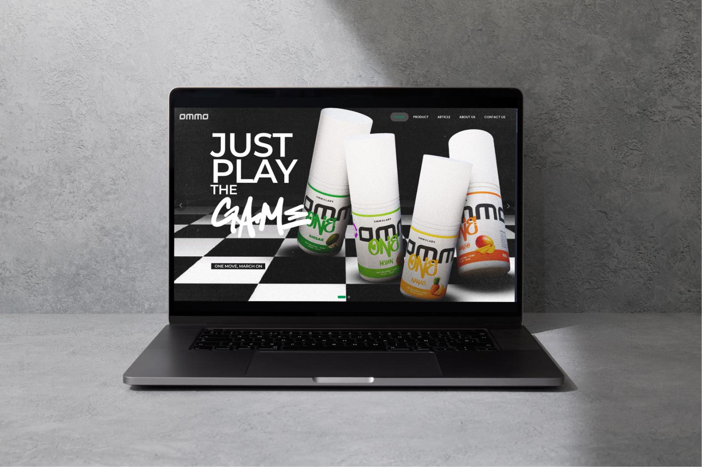
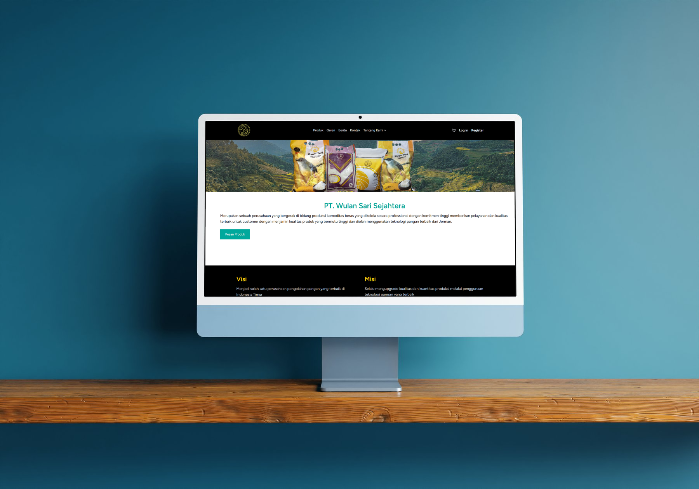
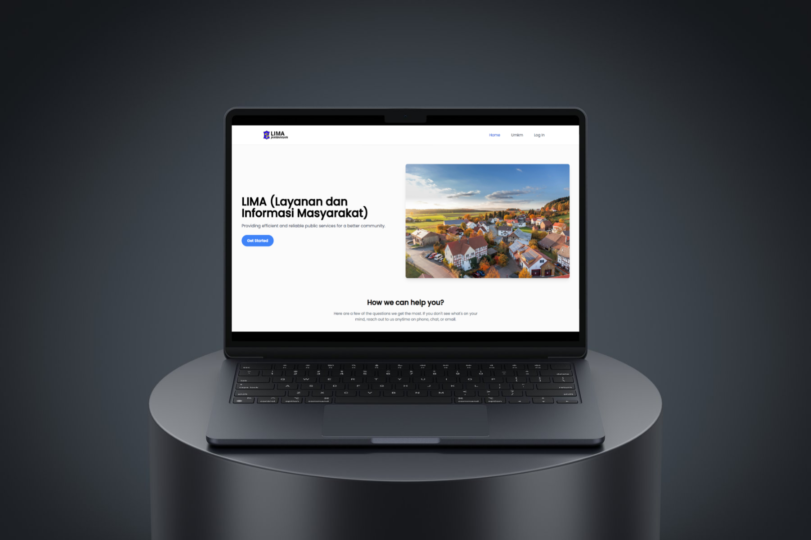

sudarmo adi.
Full-Stack Developer
ABOUT
Full-Stack Developer yang terampil dalam VueJS, NodeJS, dan PHP.
Saya telah membangun berbagai proyek real-world dan berkontribusi pada pengembangan aplikasi mobile.
Frontend.
HTML & CSS
JavaScript
VueJS
GSAP
Tailwindcss
Backend & Mobile.
PHP
Laravel
NodeJS
ExpressJS
Java (Android)
Database & Tools.
SQL (MySQL)
Redis
Git & GitHub
Postman
Work Experience
Backend Developer Intern
BangsaOnline.com | Sept 2024 – Feb 2025
Migrasi platform media dari Yii1 ke Laravel 11, melakukan refactoring fitur inti, debugging, dan menerapkan Redis untuk peningkatan performa.
Web Developer Intern
Amanah Solution | Mar 2020 – Aug 2020
Mengelola website WordPress, update konten, optimasi tampilan, dan pembuatan konten sosial media untuk branding.
Freelance Fullstack Developer
Remote | 2022 – Sekarang
Membangun berbagai proyek seperti sistem pemesanan, website company profile, platform pengaduan masyarakat, API mobile, dan sistem berbasis Vue, Laravel, dan Express.js.
PROJECTS
Ommolabs.
Website company profile interaktif untuk perusahaan liquid Ommolabs, dibangun dengan Vue 3 dan Express.js, lengkap dengan admin
panel untuk manajemen artikel, produk, partner retail, dan sistem contact.


Wulansari Sejahtera.
Sistem pemesanan berbasis Laravel yang dirancang untuk memudahkan pelanggan memesan produk beras secara online.
Setiap pemesanan langsung dikirimkan ke email pemilik usaha sehingga proses konfirmasi lebih cepat dan efisien.
Sistem dibuat sederhana, ringan, dan mudah digunakan oleh pengguna maupun admin.
— Project archived (domain expired)

Jambangan.
Website aduan masyarakat yang dibangun menggunakan Express.js sebagai backend dan React (Vite) untuk frontend.
Warga dapat mengirim laporan terkait lingkungan atau fasilitas umum, sementara sistem mencatat dan meneruskannya ke pihak terkait.
— Project archived (domain expired)

POS Apotek.
Frontend sistem Point of Sales untuk apotek, dibangun menggunakan Laravel.
Termasuk halaman transaksi, katalog obat, laporan penjualan, dan manajemen
pengguna untuk kebutuhan operasional apotek.
— Project archived (domain expired)

Rekapitulasi LKBB Sancaka.
Sistem rekapitulasi nilai lomba LKBB SANCAKA, dibangun menggunakan Vue.js
dan Google Apps Script. Fitur mencakup input nilai, perhitungan otomatis,
dan publikasi hasil secara real-time.
— Project archived (domain expired)